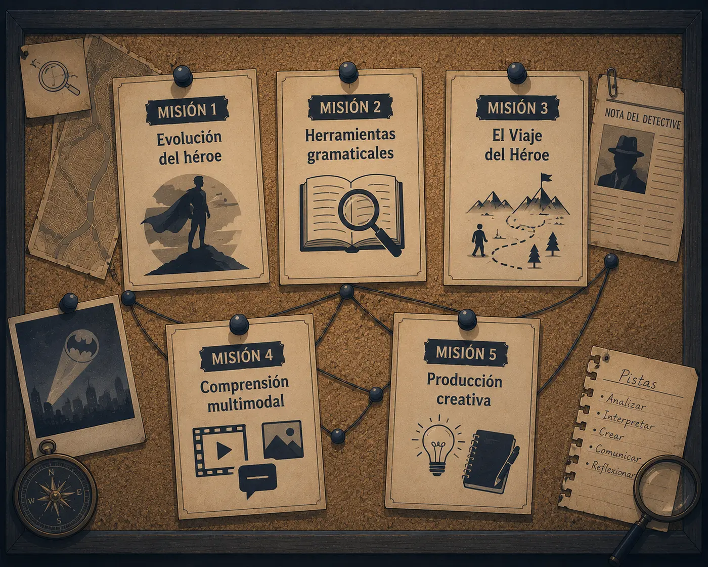

Mapa Conceptual: Detectives de Mitos
Objetivo de esta pantalla: visualizar cómo se conectan los grandes temas del caso antes de investigarlos en profundidad.
Este es nuestro tablero de evidencias. Haz clic en cada pista para leer de qué trata y saltar directamente a su misión correspondiente.

Misión 1: Evolución del héroe. Ir a Galería de Sospechosos. Misión 2: Herramientas gramaticales. Ir a Laboratorio Gramatical. Misión 3: El Viaje del Héroe. Ir a Las Huellas del Camino. Misión 4: Comprensión multimodal. Ir a El Caso Hércules. Misión 5: Producción creativa. Ir a Informe del Caso.Cada tarjeta del tablero es un enlace interno a su misión: al hacer clic o pulsar Enter viajarás directamente a esa parte del expediente. La nota del detective (arriba a la derecha) abre una ventana emergente con la definición de "héroe/heroína".